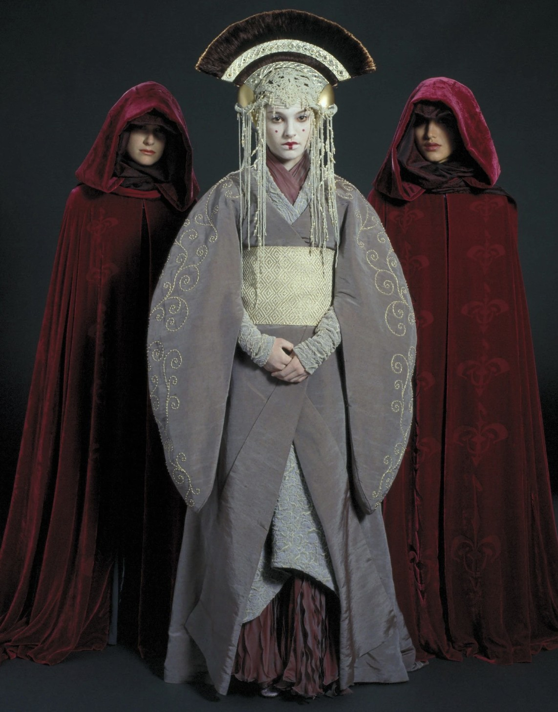
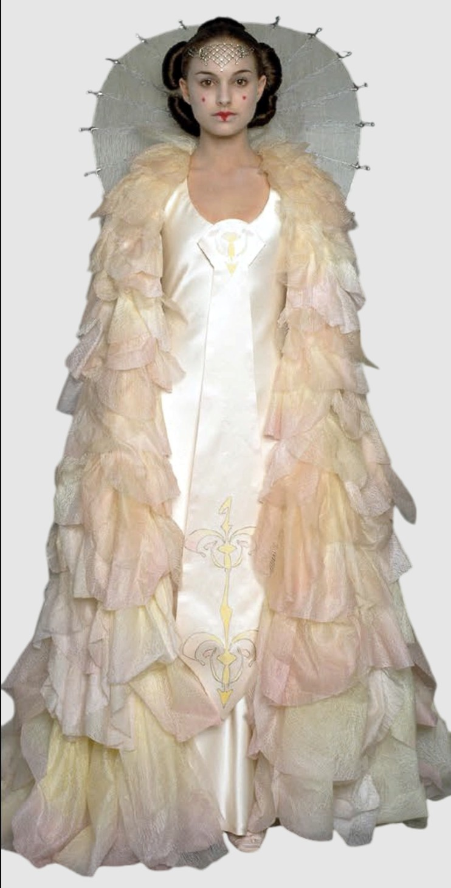

Homepage
Dresses
Skirts
Bags
Accessories
About
Commissions
Portfolio
Updates
Checkout
Dresses
Our dresses come with a circle skirt base for maximum swoosh and romance.
The cuts we offer are:
A pinafore dress
A halter dress
A sweetheart dress
Here's another pretty dress
Here's one of my favorites. As you can see, I have a Star Wars bias.

